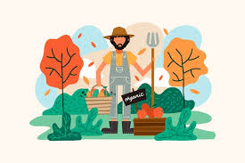
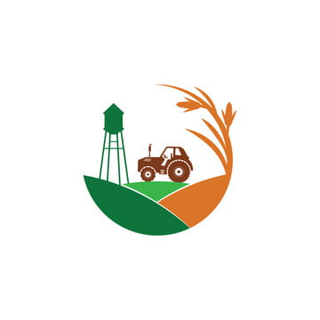

icrakarnataka@yahoo.com
9980074679
icrakarnataka
What We Do
Field Intervention

BIO-DIVERSE ORGANIC FARMING
An integral feature of organic farming is its emphasis on biodiversity, which is pivotal in ensuring the farming system's stability, sustainability, and resilience. Organic agriculture is distinguished by its deliberate focus on biodiversity, nurturing a diverse and interconnected array of life forms that collectively contribute to the agricultural ecosystem's stability, endurance, and adaptability.
MIXED CROPPING
Mixed cropping is essential in Indian agriculture, sustaining the industry and its populace for centuries. This time-honoured method has been a cornerstone of Indian farming, providing basic sustenance for the agricultural sector and its people.

PRAYOG PARIVAR
The Prayog Parivar is a collaborative group of farmers focused on experimental agricultural practices. Its innovative members, keen on organic farming, convene regularly to collectively address and discuss technical issues related to their farming methods. The development of alternative agricultural practices could be primarily attributed to the contributions of pioneering farmers and a select few organisations.
SEED-BIO
Seed-biodiverse agricultural practices are deeply embedded in seed cultivation. Local seeds, exhibiting diverse characteristics, effectively address many agricultural challenges. The intrinsic connection between seeds, farmer autonomy, and the farm system is undeniable. The meticulous selection, preservation, and enhancement processes of locally adapted seeds play a pivotal role in fostering climate-resilient farming practices.

Agroforestry
The historical farming system was based on an agro-civil-pastoral model, integrating crop cultivation, livestock management, and agroforestry to create a synergistic approach. As part of this paradigm, the Horti-Pastoral System aims to diversify income sources, mitigate risks, and ensure efficient nutrient cycling and waste management. Due to a significant decline in this system, there is an urgent need for its rejuvenation. A renewed emphasis on agroforestry has the potential to contribute significantly to this revival.

Water And Soil Conservation
Considerable attention and effort have been dedicated to water and soil conservation initiatives. Our primary focus is in-situ water conservation and implementing organic nutrient practices, contributing to soil fertility and water absorption. The soil's ability to retain and release water significantly mitigates climate-related challenges, ensuring economic stability for rainfed farmers. If implemented carefully, both elements support each other and ensure the farming system's sustainability.
Women
The continued existence of mixed cropping, seed conservation, and agricultural biodiversity in the farming sector can largely be attributed to the knowledge and contributions of women farmers. Despite their significant impact, commercial agriculture has, for the most part, marginalised these women. Recognising and acknowledging the substantial role of women in sustainable agriculture is crucial, and it is imperative to establish them as equal partners in this field.
Poison-Free Food
The extensive use of pesticides in agriculture has led to significant pesticide residues in food, negatively impacting human health and the environment. This has disrupted the ecosystem's balance, increasing environmental and economic costs. India is notably affected, with high pesticide residues in food production. To tackle this issue, consumers should support the sustainable organic movement by choosing poison-free food produced through organic practices, promoting a healthier and more sustainable food system.
Training and Workshops
Learning is a continuous process that needs to be specific to the context and based on farmers' real-life experiences. The field of biodiverse agriculture is dynamic and is shaped by the experiences of numerous practicing farmers. It encompasses a range of challenges, including environmental degradation, the erosion of traditional seeds, the loss of common land, and various agricultural production issues. Addressing these challenges requires coordinated efforts by the farmers themselves. Furthermore, it is essential to adopt an approach that emphasises actionable reflection to ensure continuous learning and improvement of knowledge.
Action Research
this research is characterized by a participatory, interactive, reflective, and problem-focused approach that culminates in actionable outcomes. The findings will inform training and workshops, improving insights and comprehension.
Magazine
Sharing the stories of bio-diverse organic farmers is crucial because they illuminate the sustainable use of our natural resources. In a world of social media, a magazine offers a valuable platform for deep learning and reflective contemplation, motivating us to take significant action.
Publications
ICRA publications are borne out of our engagement with farmers, serving as a platform to disseminate their first-hand experiences. This unique genre necessitates further refinement and fortification, functioning both as an intellectual biography and a practical farming manual, with the intent of motivating others to take proactive steps. Curating an exhaustive repository of resources elucidating biodiverse organic farming through the lens of farmers' experiences holds the potential to significantly augment our endeavours in fostering sustainable communities. This endeavour entails spotlighting farmers'